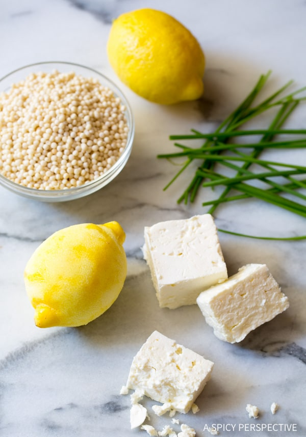

<!DOCTYPE html>
<html lang="en"></html>>
    <head>
        <meta charset="UTF-8">
        <title>Recipes</title>
        <h1>Greek Chicken Soup</h1>
        
        <h3>Lemony Greek Chicken Soup Made Simple</h3>
        <p>This Greek Lemon Chicken Soup is cozy, healthy, and loaded with Greek 
            flavors like garlic, earthy olive oil, and feta cheese. The little orbs 
            of pearl couscous and morsels of cheese swirl to the surface with every 
            spoonful. A sight that lifts the spirit and warms the belly.
        </p>
        <p>
            This is the kind of chicken soup recipe I make my kids when they come 
            home worn from a long day at school. Sometimes their stories are filled 
            with joy and excitement. Some days they are teary recollections 
            insecurity and defeat.
        </p>
        <ul>
            <li>10 cups chicken broth</li>
            <li>3 tablespoon olive oil</li>
            <li>8 cloves garlic, <em>minced</em></li>
            <li>1 sweet onion</li>
            <li>1 large lemon, <em>zested</em></li>
            <li>2 boneless skinless chicken breasts</li>
            <li>1 cup Israeli couscous (pearl)</li>
            <li>1/2 teaspoons crushed red pepper</li>
            <li>2 ounces crumbled feta</li>
            <li>1/3 cup chopped chive</li>
            <li>Salt and pepper</li>
        </ul>
        <ol>
            <li>Simply sauté the onion and minced garlic for 3-4 minutes to soften.</li>
            <li>Add the chicken broth, raw chicken breasts, lemon zest, and crushed 
                red pepper to the pot. Raise the heat to high, cover, and bring to a 
                boil. Once boiling, reduce the heat to medium, then simmer for 5 
                minutes</li>
            <li>Stir in the couscous, salt, and black pepper to taste. Simmer another 
                5 minutes. Then turn the heat off.</li>
            <li>Remove the two chicken breasts from the pot and shred the chicken. 
                Then place it back in the pot. Stir in the crumbled feta cheese and 
                chopped chive.</li>
            <li>Taste then salt and pepper as needed. Serve warm.</li>
        </ol>
        
    </head>
</html>